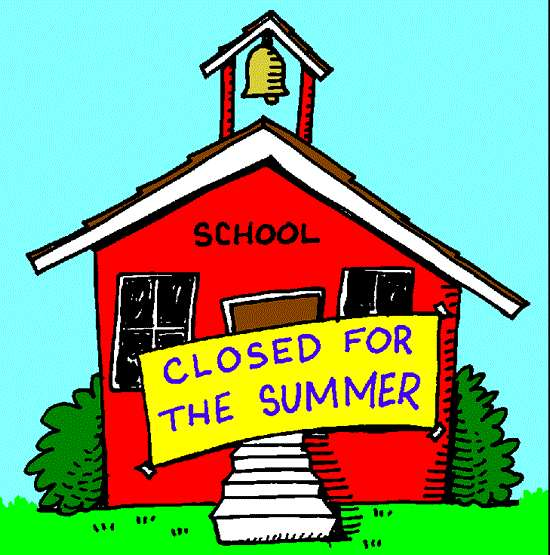

My Summer Vacation
Our school closed on May 14. we had been planning how to spend the vacation this time. There were many proposals. My parents wished to go to our home town, and be with my grandparents for about six weeks or so. My friends had a trekking expedition up their sleeves, while my classmate wished to go to some hill station on an education-tour for which our class-teacher had also given consent. I wished to avail of all three proposals. First, I made my mother and elder sister agree to my going on the tour, with my class and the teacher, as the railway concession was already allowed for such journeys. They requested my father to postpone the programme to visit the grandparents by a week or so. My father readily agreed and decided that if I wished to go for the educational tour, I could join him later. He and my mother agreed to go in the advance party to be joined by my sister and me after my tour. My friends agreed to go on trekking, after my return from both journeys, as the weather in May was not conducive to climbing in hills, that too near Alps thus, the three journeys were planned in the following order: Education tour in May, home town trip in June and trekking in july, when the monsoon reaches this part of the country. My class-teacher had arranged for the railway concession for thirty-five students and three teachers. We started on May 20 by Euro Express at about 2 p.m. reaching railway platform since the train stopped there a couple minutes, that being a big railway junction. we enjoyed our three-day stay in Paris very much. There we got our rooms booked in a lodge on Thomas street. We had boating in the nearby river four time. We went to different places. We returned on May 25, very much refreshed and happy. My father had booked our seats by Air France on June 2. I along with my sister went to this journey as already decided and reached home town on June 3. from there we had to motor down to a town nearby. We stayed with our grandparents for the whole of June. Returning in July, we went on the trekking-trip hills and covered 20 kilometers in a day. Rock climbing was pretty hard. Thus, I spent my Summer Holidays very nicely.